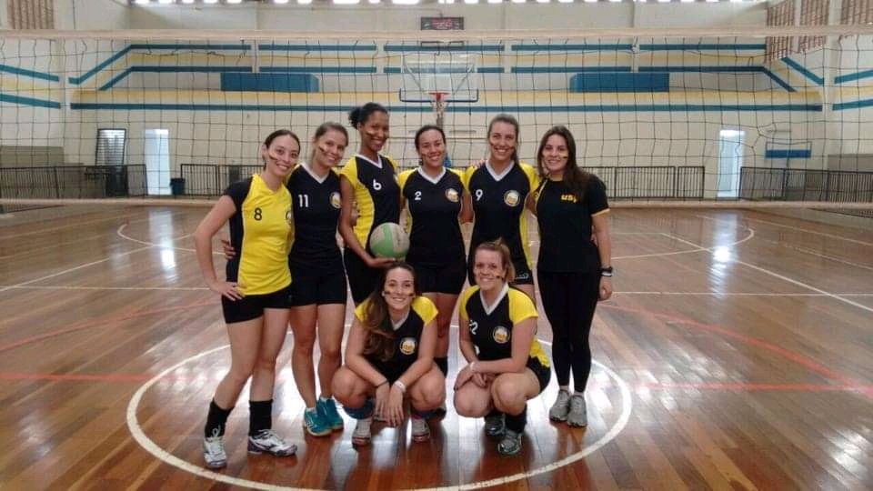
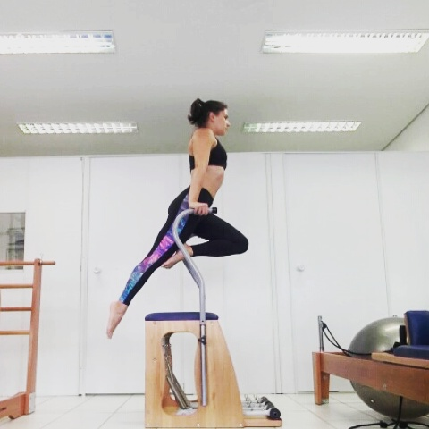

Natallia Bonadia
Atuação Profissional
Comecei minha vida profissional durante o Ensino Médio. De 2003 a 2008 trabalhei em Buffet Infantil e também como Recradora de Acampamentos.
Quando entrei na faculdade, fiz estágio nas monitorias de natação e administração da própria faculdade, mas durante 2 anos fui auxiliar técnica de voleibol do Clube Paineiras do Morumby.
Ao finalizar o curso, continuei atuando como técnica de voleibol de equipes universitárias e iniciei minha formação em Pilates.
Assim que terminei o curso de Pilates já comecei a atuar como professora e trabalhei durante 4 anos em diversos Studios.
Fui evoluindo como professora e recebi a oportunidade de me tornar Coordenadora de um dos Studios em que eu trabalhava.
Permaneci por 3 anos como Coordenadora e depois me tornei Gerente de uma das unidades de uma rede de Academias.
Sai da academia para estudar e me especializar no Mercado Financeiro. Hoje, além de manter esses estudos, estou aprendendo também sobre Desenvolvimento Web.